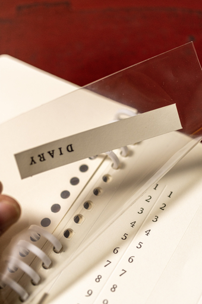

昨日のログで余っていた MD ノートを使ってロルバーン・スリムをレストアしたと書いた。
バラした MD ノートの表紙と裏表紙が余っていた。厚さもそれなりにあってロルバーンの裏表紙ほどではないがそこそこの硬さがある。なのでそのまま新ノートの表紙と裏表紙に使うことにした。
MD ノートのそこそこ大きな帯は表紙に貼り付けるといい感じになりそうだったので表紙に貼り付けることにした。
表紙用の紙に穴を開けてから帯を表紙に貼り付けることを思いついてしまったので、穴の部分は帯紙に覆われておらず段差が生じているが、自分が使うつもりなので紀にしないことにした。
MD ノートの表紙か裏表紙だったか失念したが、MD マークのエンボス加工が加えられている。その部分を表紙に使うとかっこいいのではと思って使うつもりだったのだけれど、よりにもよってそのエンボス加工が入っている表紙部分の穴あけに失敗してしまった。失敗しても許容できる紙でテスト的に穴を開けてからこちらの紙に穴を開ければよかったと後悔したが後の祭りだった。

クリアポケットはロルバーン M から 1 枚を抜いて流用した。
MD ノートに付属するインデックス等も穴を開けて綴じ込んだ。レイアウト的に綴じ込めないインデックスは切り離してクリアポケットに入れておくことにした。
現時点ではリフィルがまだすっからかんなので、カール事務器のルーズリングで仮留めしている。なぜ仮留めなのかというとルーズリングではリングにペンが挿せない。厳密に言うとペンが挿せないわけではないのだけれど、ペンをねじ込むとリングが外れてしまうのが非常にストレスになる。なので将来的には金属製のダブルリングを取り付けたい。
裏表紙にも MD ノートの帯の裏側をいい感じに貼り付けたら完成だ。
最後になるが新ノートの仕様はロルバーン M と同様のスペックとした。そうすることでロルバーン M と用紙やクリアポケットを共用できるし、リングを上下 4 穴のみつけるようにするとロルバーン・フレキシブル M のリフィルをそのまま使うことができる。
レストアしたロルバーン・スリムは当面使わずに保存しておくことにした。次回からどのサイズのロルバーンを使うのか昨日から悩んでいたのだけれど、安定して製品が供給されそうな A6 サイズのロルバーン M 互換ノートを当面使うことにした。
とはいえ今使っている測量野帳にまだ十分なページが残っているので、今日組んだロルバーン M 互換ノートの出番はまだ先になる。